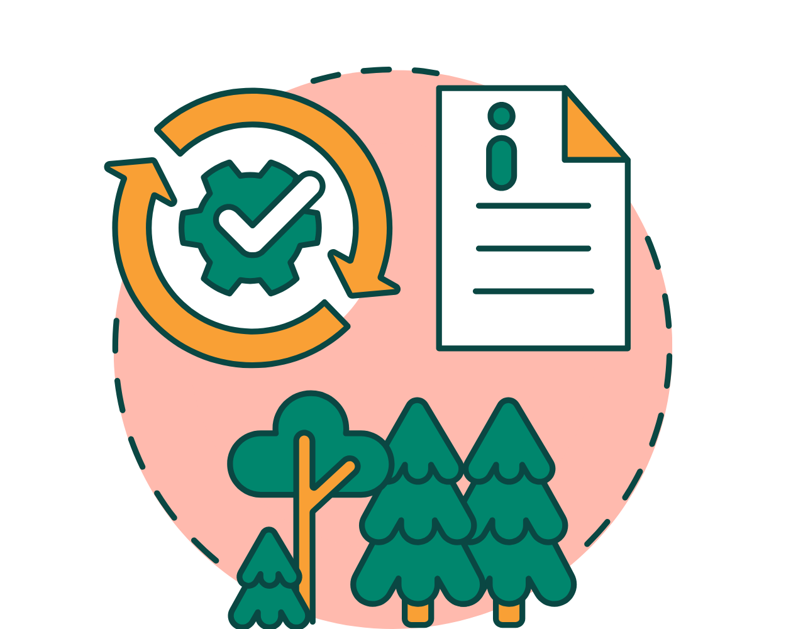
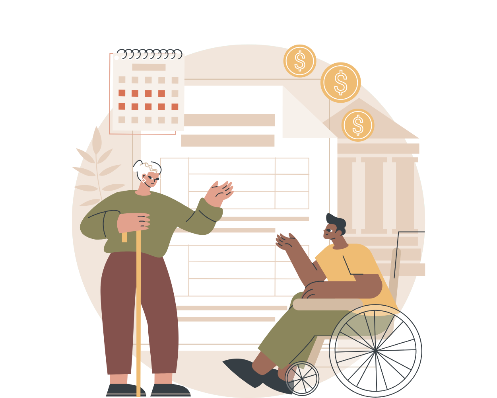

Diskrimineringslagen
Denna lag syftar till att motverka diskriminering och främja lika
rättigheter och möjligheter oavsett kön, könsöverskridande identitet eller uttryck,
etnisk tillhörighet, religion eller annan trosuppfattning, funktionsnedsättning,
sexuell läggning eller ålder.

Lag om anställningskydd (LAS)
Denna lag skyddar arbetstagares rättigheter och reglerar uppsägning, avsked och
anställningsformer.

Arbetstidslagen
Arbetstidslagen innehåller bestämmelser om arbetstidens längd och förläggning.

Förtroendemannalagen
Lag om facklig förtroendemans ställning på arbetsplatsen. Innehåller regler och
skydd för de fackliga förtroendemän som de anställda utsett till sina företrädare.

Lag om skydd mot olyckor
Syftar till att skydda människors liv och hälsa samt egendom och miljö mot olyckor.

Miljöbalken
Miljöbalken syftar till att främja en hälsosam och god miljö.

Socialförsäkringsbalken
Denna lag bestämmer om social trygghet genom olika socialförsäkringar
och bidrag.